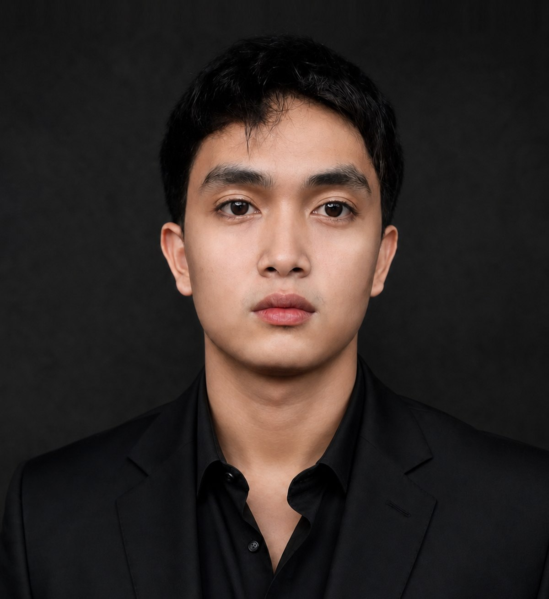
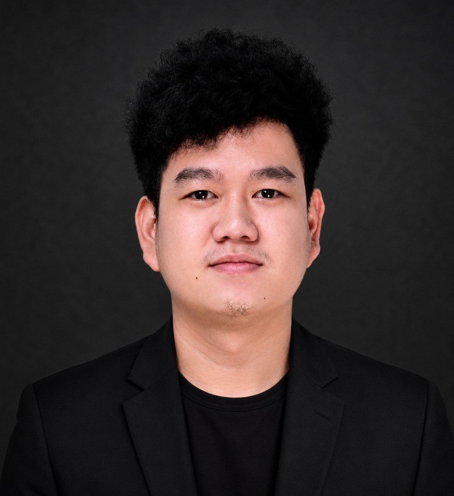

Strategy
& Direction
Finding the clearest path from a business goal to a digital experience people understand.
Clarity before complexityWe bring strategy, design, and technology together to make digital work feel clear, useful, and ready for what comes next.
Our team works across the full digital landscape, with every discipline connected to the same purpose: building work that moves businesses forward.
Finding the clearest path from a business goal to a digital experience people understand.
Clarity before complexity
02 / DESIGN & BUILDWeb developer and graphics designer building clear digital experiences.
Web Developer / Graphics Designer
03 / BUILD & SUPPORTWeb developer and technical support specialist keeping products reliable.
Web Developer / Technical SupportServer management and technical support for stable digital systems.
Server Management / Technical SupportWe bring the right people and perspectives together, keeping the thinking sharp and the conversation open. That lets us move with purpose without losing the care that makes the final work feel right.